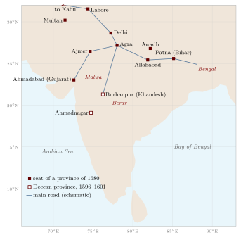

Chapter 7: Geography in Persian: From the Ḥudūd al-ʿĀlam to the Mughal Gazetteers¶
From the thirteenth century to the early nineteenth, Persian was the language of government, diplomacy and much of the learning of northern and central India, and of the Deccan courts as well. A great deal of the geographical knowledge produced in India in those six centuries was written in it: descriptions of provinces, lists of roads and stages, statistical returns of districts and villages, tables of latitudes and longitudes, encyclopaedias arranged by the climes of the earth, and accounts of journeys. Most of this writing was done in India by people who lived there, many of them Hindus of the scribal communities who had learned Persian for service in the revenue and chancery offices. It is therefore part of the Indian geographical tradition, not a foreign view of it, and it deserves to be read beside the Sanskrit and regional-language sources of the earlier chapters (Alam and Subrahmanyam 2007; Kinra 2015).
This chapter traces that tradition: the Islamic geographical learning that Persian writers inherited, the geography of the Delhi Sultanate, the Āʾīn-i Akbarī and its statistical description of the Mughal provinces, the road books and itineraries, and the regional and late Persian geographies on which the first British surveyors drew. Al-Bīrūnī’s book on India, which belongs to this story but was written in Arabic by a visitor, is treated with the other foreign accounts in Chapter 6; Mughal maps and globes are described in Chapter 5.
7.1 The Inheritance: Climes, Routes and Realms¶
Persian geographical writing in India drew on a tradition that had taken shape in Arabic in Baghdad and the eastern Islamic lands between the ninth and eleventh centuries. That tradition had two main branches (Harley and Woodward 1992).
The first was mathematical. From Ptolemy’s Geography and from Indian and Persian astronomy, Islamic astronomers took the idea of locating places by latitude and longitude, and they compiled tables of coordinates in their astronomical handbooks (zīj). They also took over the Greek division of the inhabited quarter of the earth into seven “climes” (iqlīm, from Greek klima), east–west bands defined by the length of the longest day. In this scheme most of the Indian peninsula fell in the first and second climes and the Panjab and the upper Gaṅgā plain in the second and third, while Kashmir lay further north. The climes were a convenient frame for arranging knowledge as much as a physical description, and Persian encyclopaedias written in India used them to order their entries centuries later.
The second branch was descriptive. Writers of the genre called “routes and realms” (al-masālik wa’l-mamālik), beginning with Ibn Khurradādhbih in the ninth century (Chapter 6), described the lands of the world by their roads, stages and distances, their towns and products, and the taxes they yielded. A group of tenth-century geographers often called the Balkhī school, among them al-Iṣṭakhrī and Ibn Ḥawqal, produced a standard set of regional maps of the Islamic world, one of which showed Sind with the Indus, Multan and Manṣūra. These maps were schematic: rivers were drawn as straight or evenly curved bands, towns as circles, and coasts as geometrical arcs, so that they show the order of places along routes rather than their measured positions (Harley and Woodward 1992).
7.1.1 The Ḥudūd al-ʿĀlam¶
The oldest surviving geography in New Persian, the anonymous Ḥudūd al-ʿĀlam (“The Limits of the World”), was written in 982–83 for the Farīghūnid ruler of Gūzgānān in what is now northern Afghanistan. It describes the known world region by region, beginning with seas, islands, mountains and rivers and then taking each country in turn, with its towns, rulers, products and peculiarities. Its section on Hindūstān draws on earlier Arabic geographers and on merchants’ reports: it names Indian kings and towns, notes the goods for which places were known, and records the Muslim communities of Sind and Multan. Its knowledge of the interior of India is thin and in places garbled, as one would expect of a work compiled far from the country, but it established in Persian the pattern of country-by-country description that later writers in India would fill with far more detail. The text survives in a single manuscript, which Vladimir Minorsky translated with an extensive commentary (Minorsky 1937).
7.1.2 Coordinates and the Problem of the Qibla¶
The mathematical branch reached its peak with al-Bīrūnī. His Taḥdīd nihāyāt al-amākin (“Determination of the coordinates of places”), completed at Ghazni in 1025, set out methods for determining the latitudes and longitudes of cities from astronomical observations and from measured distances along roads, with the practical aim of finding the direction of Mecca (qibla) from Ghazni (al-Bīrūnī 1967). His later handbook, the al-Qānūn al-Masʿūdī, dedicated to Sultan Masʿūd of Ghazni in the 1030s, includes a table of the coordinates of several hundred places. Several Indian towns appear in it, some probably located from Indian sources whose longitudes were counted from the meridian of Ujjain (Chapter 3) and converted to the Islamic reckoning from the western edge of the inhabited world. The practice of listing places by coordinates passed into the later Persian handbooks used in India, and lists of latitudes and longitudes of Indian towns appear in Mughal works, including the Āʾīn-i Akbarī.
7.2 The Geography of the Delhi Sultanate¶
The Delhi Sultanate (1206–1526) produced no single geographical treatise, but its histories contain a great deal of geography, because their subject was campaigns, conquests and the assignment of revenue from territory.
7.2.1 The Chronicles¶
Minhāj-i Sirāj Juzjānī’s Ṭabaqāt-i Nāṣirī, completed around 1260, is the main narrative source for the first half-century of the Sultanate. In describing the conquest of Bengal it divides the territory of Lakhnautī into two “wings” on either side of the Gaṅgā: Rāl to the west and Barind to the east, that is, the old regions of Rāḍha and Varendra of the Sanskrit inscriptions (Chapter 12). It also describes Bakhtiyār Khaljī’s disastrous expedition, around 1205–06, into the hills north of Bengal, which Juzjānī reconstructed from the accounts of survivors and which is one of the earliest Persian descriptions of the approaches to the eastern Himālaya. Later chroniclers, from Baranī in the fourteenth century to the historians of the Afghan dynasties, record the marches of armies stage by stage, the rivers crossed and the forts besieged, so that the historical geography of the period can be reconstructed from them in considerable detail.
7.2.2 An Arabic View of the Tughluq Empire¶
The fullest description of the Sultanate at its greatest extent was written not in Delhi but in Damascus and Cairo. Shihāb al-Dīn al-ʿUmarī (1301–1349), a secretary in the Mamluk chancery, devoted part of his encyclopaedia Masālik al-abṣār to India under Muḥammad ibn Tughluq (r. 1325–51), using the reports of travellers, merchants and scholars who had been at the sultan’s court. He gives the number of the sultan’s provinces as twenty-three and names them, from Lahore and Multan in the west to Lakhnautī in the east and Maʿbar and Dvārasamudra in the far south, and he describes Delhi, the roads and the system of couriers. Read with Ibn Baṭṭūṭa’s account (Chapter 6), it shows how the Tughluq empire was imagined as a set of provinces held from Delhi, and briefly from Daulatābād, the Deccan capital to which Muḥammad ibn Tughluq moved much of the Delhi élite in 1327.
7.2.3 Praise of Hindustan¶
Persian poets writing in India gave their land a literary geography of its own. In his poem Nuh Sipihr (“Nine Heavens”, 1318), Amīr Khusrau of Delhi argued that Hindustan was superior to other lands in its climate, its learning and its many languages, which he listed by region—among them the speech of Sindh, Lahore, Kashmir, Bengal, Gujarat and the Telugu country. Later Persian writers in India often opened their histories with a similar description of the land and its excellences, and a list of its regions became a standard part of the description.
A word about names. Persian writers used Hindūstān in two senses: for the whole subcontinent, and more narrowly for the north, the plains of the Gaṅgā and Yamunā, as distinct from the Deccan (Dakhan, from Prakrit dakkhiṇa, “south”), Bengal (Bangāla) and Gujarat. The narrower usage survives in the Hindi and Urdu of the Gangetic plain and in the name of Hindustani music, whose northern tradition is distinguished from the southern (Karnatak) one. The ambiguity has to be kept in mind whenever a Persian source says that something is true “of Hindustan”.
7.3 The Āʾīn-i Akbarī as a Work of Geography¶
The Āʾīn-i Akbarī, the third part of Abū’l-Faẓl’s history of Akbar’s reign, completed in the late 1590s, is the greatest geographical description of India produced in the pre-colonial period (Abū’l-Faẓl 1873, 1891–1894). It is also an administrative manual, a statistical return and an encyclopaedia, and its geography cannot be separated from these other purposes.
7.3.1 The Account of the Provinces¶
In 1580 Akbar divided the empire into twelve provinces (ṣūba): Kabul, Lahore, Multan, Delhi, Agra, Awadh, Allahabad, Bihar, Bengal, Ajmer, Gujarat (Ahmadabad) and Malwa. The Deccan conquests of 1596–1601 added Berar, Khandesh and Ahmadnagar. Each province was divided into districts (sarkār), and each district into sub-districts (pargana, also called maḥal), which were made up of villages (mauẓaʿ). Figure 7.1 shows the seats of the provinces. The Āʾīn’s “account of the twelve provinces” takes them in turn, beginning with Bengal in the east, and describes each in two parts.

The first part is descriptive. It gives the province’s length and breadth in kos, its boundaries, its climate and seasons, its rivers and mountains, its crops, fruits, flowers and animals, its crafts and markets, its places of pilgrimage and its “wonders”, and often a history of its earlier rulers. Some entries contain observations of real value: on the flooding of the Bengal rivers, on the snow and saffron of Kashmir, and on the mines, crafts and markets of particular districts. Abū’l-Faẓl explains the name Bangāla, for example, as the old name Bang with the addition of āl, the earthen embankments that the people raised in their fields against the floods; whatever its value as etymology, the explanation reflects an exact observation of the deltaic landscape.
The second part is statistical. For each sarkār and pargana the Āʾīn gives a set of figures and notes, summarised in Table 7.1. They were drawn from the records of the revenue administration and were not collected for the book; Abū’l-Faẓl edited and arranged figures that already existed in the imperial offices (Habib 1999).
| Entry | Content |
|---|---|
| Measured area (ārāẓī) | Land measured under the zabṭ system, in bīghās; given only where measurement had been carried out |
| Assessed revenue (jamʿ) | The revenue expected from the unit, in dāms (copper coins, forty to the rupee) |
| Revenue grants (suyūrghāl) | Revenue assigned to scholars, religious men and institutions |
| Castes of the zamīndārs | The communities holding superior rights in the land, such as Rajputs, Jats, Brahmins or Afghans |
| Troops | Cavalry and infantry (and sometimes elephants) that the local zamīndārs were expected to furnish |
| Forts and notes | Brick or stone forts; occasionally markets, mines or other features |
These tables make the Āʾīn something rare among pre-modern descriptions of any country: a systematic statistical geography, arranged by territorial units, for an empire covering most of northern and central India. Shireen Moosvi has used them to estimate the area under cultivation, the size of the revenue and the distribution of resources around 1595, and Irfan Habib plotted the sarkārs and parganas, with their revenue and other data, on the sheets of his Atlas of the Mughal Empire (Moosvi 1987; Habib 1982). Both have also shown the limits of the material. The measured area was recorded only in the provinces where the zabṭ system of measurement had been introduced; for some provinces, Bengal among them, the land had not been measured and the figures come from other systems of assessment; the units of land and money varied; and a number recorded in a revenue office was a target and a claim, not necessarily what was collected. The survey on which the measured figures rested is described in Section 5.11.
7.3.2 Hindu Learning and the Coordinates of Places¶
The Āʾīn also contains a long account of Hindu learning, written with the help of Brahmin informants at Akbar’s court. Among much else it summarises the Purāṇic division of the earth into continents and oceans, the astronomers’ spherical earth and the reckoning of longitude from the meridian of Laṅkā and Ujjain (Chapters 2 and 3), and it sets these beside the climes and coordinates of the Islamic tradition, with a table of the latitudes and longitudes of places. Abū’l-Faẓl did not try to reconcile the two systems; he reported both, with the respect for Indian learning that was part of Akbar’s court culture.
7.4 Roads, Stages and Itineraries¶
Persian writers measured travel in manzils, a day’s stage, and in kos (Chapter 8). The Mughal court was itself an itinerant capital for much of the year, and the chronicles record the emperor’s marches stage by stage. Jahāngīr’s memoirs are the richest example. On his journeys to Gujarat and Kashmir he noted the halting places, the distances in kos, the passes and rivers, and the birds, animals, flowers and trees that he saw, often with the precision of a naturalist; his descriptions of the route over the Pīr Panjāl and of the spring in Kashmir are among the most detailed pieces of landscape description in Persian (Jahāngīr 1999).
Below the level of the court, itineraries listing the stages and distances on the main roads circulated among officials, soldiers and merchants. Two works of the late seventeenth and mid-eighteenth centuries gathered such information into descriptions of the empire, the second with something like a road book.
-
The Khulāṣat al-Tawārīkh (1695–96) of Sujān Rāy Bhandārī, a Hindu secretary (munshī) from Batala in the Panjab, is a history of India that opens with an account of the provinces of the empire under Aurangzeb, their rivers, towns, products, shrines and revenue.
-
The Chahār Gulshan of Rāy Chaturman, a Kāyastha, written in the mid-eighteenth century, adds lists of the stages and distances on the main imperial roads radiating from Delhi to the provinces, as well as provincial statistics.
Jadunath Sarkar translated the topographical parts of both works and used them to reconstruct the roads and provinces of Aurangzeb’s empire and to compare them with Akbar’s (Sarkar 1901). The road lists show a network of trunk routes—Delhi to Lahore and Kabul, Agra to Ajmer and Ahmadabad, Agra to Burhanpur and the Deccan, Agra to Allahabad, Patna and Bengal—lined with sarāys and, on the northern roads, with kos mīnārs (Section 8.1).
7.4.1 News, Couriers and the Information Order¶
Geographical knowledge in the Mughal empire moved through people as much as through books. The empire posted news-writers (wāqiʿa-nawīs) in the provinces and districts, and runners and horsemen carried their reports along the roads to the court. Local officials, bankers and merchants kept their own correspondence. When the East India Company began to govern in Bengal it inherited this system and its personnel; C. A. Bayly has described how the Company depended on Indian news-writers, runners (harkāras) and munshīs for its knowledge of the country, and how its failures of information could be costly (Bayly 1996). The itineraries and route lists used by the first British mapmakers came, in large part, out of this Persianate information order (Chapter 14).
7.5 Encyclopaedias, Atlases and Regional Geographies¶
7.5.1 Geographical Encyclopaedias¶
The Haft Iqlīm (“Seven Climes”, 1594) of Amīn Aḥmad Rāzī, an Iranian who wrote in Mughal India, arranges its notices of countries and cities, and above all of their famous men and poets, according to the seven climes of Islamic geography, with a long section on the cities of Hindustan. It is more a biographical dictionary set in a geographical frame than a geography, but the frame itself shows how the climes still organised knowledge in the age of Akbar.
The Shāhid-i Ṣādiq of Muḥammad Ṣādiq Iṣfahānī, completed at Jaunpur in 1647, is an encyclopaedia of history, ethics and the sciences. Its geographical part includes a gazetteer of places with their coordinates, and some manuscripts contain a set of sectional maps drawn on a grid of latitude and longitude, which Schwartzberg discusses as one of the very few Indo-Persian atlases (Harley and Woodward 1992). The maps use the coordinates of the tables rather than any new survey; their interest lies in the attempt to present the known world, India included, on a consistent grid.
7.5.2 Regional Descriptions¶
From the late seventeenth century, as the empire weakened and provincial courts grew stronger, Persian writers produced histories and descriptions of particular regions.
-
The Mirʾāt-i Aḥmadī (completed 1761) of ʿAlī Muḥammad Khān, an imperial revenue official (dīwān) in Gujarat, ends with a supplement describing the province: its towns and ports, its shrines and gardens, its administrative divisions and revenue. It is one of the fullest descriptions of any Indian province before the colonial gazetteers.
-
The Riyāẓ al-Salāṭīn (1788) of Ghulām Ḥusain Salīm, a history of Bengal written at the request of an English official at Malda, opens with a description of the province’s boundaries, rivers and towns before turning to its rulers.
-
Histories of Kashmir in Persian continued the tradition of Kalhaṇa’s Rājataraṅgiṇī (Chapter 10) and described the valley’s parganas, springs and shrines.
This literature was written mostly by officials and secretaries, many of them Hindus of the scribal castes—Kāyasthas, Khatrīs and Brahmins—and it combines the conventions of Islamic geography with detailed knowledge of the land gained in administration. Rajeev Kinra’s study of Chandar Bhān Brahman, a Brahmin secretary of Shāh Jahān’s reign, shows how such men understood their Persian learning as part of their own culture, not as something borrowed (Kinra 2015).
7.6 Persian Geography in the Service of the Company¶
The East India Company governed in Persian for its first seventy years in Bengal. Its revenue records, correspondence with Indian rulers and court proceedings were in Persian until 1837, when English and the regional languages replaced Persian as the language of the courts and revenue offices. During that period Persian geographical knowledge flowed into the Company’s own.
-
The Āʾīn as a source. Francis Gladwin published an English translation of parts of the Āʾīn-i Akbarī in Calcutta in 1783–86. James Rennell drew on the Āʾīn’s lists of provinces and distances for his Map of Hindoostan and its Memoir (Chapter 14).
-
Itineraries and informants. Company officers collected route lists and descriptions from munshīs, news-writers and merchants, and surveyors used them where they could not measure (Raj 2007).
-
Commissioned journeys. The veterinary surgeon and explorer William Moorcroft sent his Persian secretary, Mīr ʿIzzatullāh, ahead of him in 1812–13 on a journey from Kashmir through Ladakh, Yarkand and Kashgar to Bukhara. ʿIzzatullāh’s Persian account of the route, its stages, passes, towns and rulers was later translated into English, and it anticipated by half a century the journeys of the pundits (Chapter 14).
The Persian administrative vocabulary outlived Persian itself. The units and records of the Mughal revenue system—the pargana, the district (ḍilaʿ, Hindi zilā), the tahsīl (from taḥṣīl, “collection”) and the taʿalluqa (tāluk), the village (mauẓaʿ, mauzā), and the patwārī’s field book (khasra) and record of rights (jamābandī)—passed into British administration and remain in use in the land records of much of India today. The Hindi and Urdu word for a province or state, sūbā, is the Mughal ṣūba; it gave its name to the “Punjabi Suba” movement for a Punjabi-speaking state (Chapter 12).
7.7 The Place of Persian Geography¶
Indo-Persian geographical writing was neither a branch of Arabic geography transplanted to India nor a precursor of colonial science. It was a tradition of its own, which used the frames of Islamic learning—the climes, the coordinate tables, the description of realms and routes—to organise a vast store of knowledge about the land that came from the practice of government in India. Its strength lay in description and enumeration: of provinces and their products, of roads and their stages, of districts and their revenue. Its weakness, from the point of view of later cartography, was the same as that of the Sanskrit and regional sources: it seldom turned this knowledge into scaled maps (Chapter 5). When British surveyors did so, they relied heavily on what the Persian records contained.
Further Reading¶
On Islamic geography and cartography, Harley and Woodward (1992); on the Āʾīn-i Akbarī, Abū’l-Faẓl (1891–1894), Habib (1999) and Moosvi (1987); for maps of Mughal India, Habib (1982); on roads and provinces under Aurangzeb, Sarkar (1901); on Indo-Persian travel and the Persian secretaries, Alam and Subrahmanyam (2007) and Kinra (2015); on the information order of late Mughal and Company India, Bayly (1996).